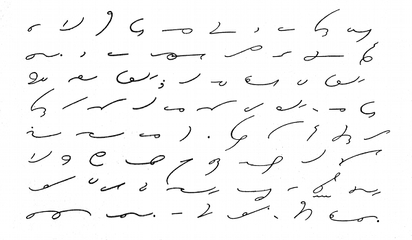

خبریں
فیچر
اکثر میں اپنے چھوٹوں کو پینسل سے آڑی تیرچھی لاکیریں مارتا دیکھتا اور اپنے بچپن کا وہ وقت بھی یادکیا کرتا تھا، جب مجھ سے انگریزی (abcd) کی جگہ آڑی تیر چھی لائینے ہی بنتی تھی،میں سوچ رہا تھا، کیا انسان کی قدرتی لیکھنے کا عمل جنات کی زبان میں ہوتا ہے؟یہ ایسا کوئی علم دنیا میں موجود ہے جو ان اشارتی لائینوں سے لیکھا جاسکتا ہو؟آخر کار کھوج لگانے پر پتہ چلاایک اسکل ایسی بھی دنیا میں موجود ہے جو کہ صرف مختصرلائینوں میں بات مکمل کرنے کی حامل ہے۔
خدا نے انسان کو اشرف ا لمخلوقات بنایا ہے یہی وجہ ہے کہ انسان کے پیدا ہونے سے لحد تک سیکھنے کاعمل جاری رہتاہے۔کچھ اسکلزہمیں قدرتی طور پر مہیاکیے جاتے ہیں،جو کہ فطری عمل کہلاتے ہیں جن میں مسکرانے کا عمل،سونے کا عمل،کھانے کاعمل، بولنے کا عمل اورماں باپ کی پہچان کا عمل شامل ہے۔ اس کے علاوہ پڑھنے،لکھنے،چلنے،دوڑنے کاعمل یہ وہ اسکلزہیں جو ہم ظاہری دنیا میں سیکھتے ہیں۔ شارٹ ہینڈاسکلز پر عبور حاصل کرنے کے بعد پتہ چلا کہ یہ وہ ہی بچپن کی آڑی تیر چھی لائینے ہیں جو کہ ہم نئے اسکل کے طو ر پر سیکھتے ہیں۔ ہر دور میں کسی نہ کسی ا سکل کو مقصوص مقام حاصل ہے یہی وجہ ہے کہ شارٹ ہینڈا سکل بھی دور ماضی کے تعلیم یافتہ طبقے میں منفرد مقام رکھتی تھی۔
پاکستان بھر میں ۰۶۹۱ سے ۰۷کے عشرے میں اردو نویسی کی مقبولیت کے ساتھ ساتھ اردو مختصر نویسی کو بھی بہت پزیرائی ملی۔ اردو اور انگریزی شارٹ ہینڈ پاکستان میں تعلیم حاصل کرنے والے طبقے میں ایک نئے ہنر کی طرح مقبول ہوئی۔ سندھ بھرکے دفاتر میں شارٹ ہینڈ استعمال کے لئے نجی اور سرکاری سطح پرکئی انسٹیٹوٹ کائم کیے گئے۔جن میں تعلیم حاصل کرنے والے مرد اور خواتین شارٹ ہینڈ کو نئے اسکل کے طور پر سیکھتے تھے۔
شارٹ ہنڈ کے ماہر پروفیسر سمیع الحق کے مطابق صرف حیدرآباد شہر میں ۱۹۶۵ میں سرکاری سطح پر گورنمنٹ کمرشل انسٹیٹوٹ جب کے نجی سطح پر مغل انسٹیٹیوٹ قائم کیا گیا۔جن میں ظہور الٰہی اور غیاس الدین شیخ جسے قابل استادوں کی رہنمائی سے شارٹ ہینڈ اسکل کے ساتھ کمپیوٹر ٹائپینگ بھی سیکھائی جاتی تھی۔لیکن ریکارڈینگ یا ٹیکسیشن جیسی مشینوں کی ایجاد کے باعث زبوں حالی کا شکار ہونے والی یہ اسکل سرکاری اور نجی محکموں میں آج بھی معقول حیثیت کی حامل ہے۔
شارٹ ہینڈ یا سٹینوگرافی الفاظ کو مختصر انداز میں لکھنے کا نام ہے مشہور اقوال کے مطابق " تقدیر میرے افعال کا شارٹ ہینڈ، موسیقی جزبات کا شارٹ ہینڈ، آخبار میں کارٹوں مزاحیہ کہانی کا شارٹ ہینڈ،موت دوسری زندگی کا شارٹ ہینڈ"۔جیسا کہ موسیقی سے جزبات اُبھارے جاتے ہیں۔ اور آخبارا ت میں کہانی کو تفصیل ً وضع کرنے کے لیے مختصر کارٹون کا استعمال کیا جاتا ہے اسی طرح تقدیر بھی انسان کے اعمال کا شارٹ ہینڈ ہے جس کو وہ خود اپنے افعال سے تبدیل کر سکتا ہے۔ اسی طرح چونکہ شارٹ ہینڈا سکل کی مدد سے آپ زیادہ سے زیادہ الفاظ کو کم سے کم وقت میں لکھ سکتے ہیں یہی وجہ ہے کہ شارٹ ہینڈ، الفاظ کا شارٹ کٹ کہاجاتا ہے۔ اردو یا انگریزی میں بولے گئے الفاظ کو مخصوص مختصر اشاری لائنوں میں لکھنے کے علم کواردو،یا انگریزی شارٹ ہینڈ کہتے ہیں۔ دنیامیں سب سے زیادہ مشہور شارٹ ہینڈ، سر آئزک پٹ مین جوکہ برطانوی شہری تھے،کی ایجاد کردہ ہے۔
ایک رپورٹ کے مطابق شارٹ ہینڈ، سیشن کورٹ،نیشنل اور انٹر نیشنل میڈیا کے لیے کارآمد ہے۔اگر چہ شارٹ ہینڈکا استعمال زبانی ڈکٹیشن یا گفتگو کو ریکارڈکرناہے لیکن شارٹ ہینڈ ریکارڈ کو خفیہ رکھنے میں بھی استعمال کی جاتی ہے۔ مثال کے طور پر، ہیلتھ کیئر پروفیشنل میڈیکل چارٹ اور خط و کتابت میں شارٹ ہینڈنوٹ استعمال کیے جاتے ہیں، جن کا مقصد فوری طور پر استعمال کرناہوتا ہے۔پھر ڈیٹا اینتری کے زریعے لانگ ہینڈ میں نقل کیا جاتا ہے۔
جی انسٹیٹوٹ کے ٹیچر شارٹ ہینڈ میں مہارت رکھنے والے راشد علی شیخ کے مطابق ماضی میں شارٹ ہینڈ اسکل سرکاری سطح پر سرکاری کامرس کالجوں میں ڈی کام(ڈپلومہ ان کامرس) شارٹ ہینڈ کا اختیاری مضمون کے ساتھ کر وایاجاتاتھا۔لیکن اب یہ نہ ہونے کے برابر ہیں۔مگرہر شہر میں آج بھی کئی نجی ادارے شارٹ ہینڈ اور ٹائیپنگ کورس نہایت معقول فیس میں کرواتے ہیں۔انگریزی شارٹ ہینڈ سیکھنے کے لیے چار سے چھ ماہ درکارہوتے ہیں۔اور اس میں مہارت کے لئے مزید تین ماہ۔اگر سیکھنے والا صحیع محنت کرے تو یہ کم بھی ہوسکتاہے شروع میں آپ کو شارٹ ہینڈ کا مضمون کچھ خشک اور مشکل لگے گا۔ لیکن دل لگاکر سیکھنے سے صرف چند دن ہی میں آپ کو مزاح آنے لگے گا۔
ایک رپورٹ کے مطابق تقریباً ہر سرکاری محکمے میں سٹینوگرافرکی ایک یا ایک سے زیادہ سیٹیں ہوتی ہیں،ہر محکمے کے ضلعی دفتر میں سٹینوگرافر کی ایک یا دو سیٹیں ہوتی ہیں۔جبکہ ہر ضلع میں موجود سیول سیشن کو رٹس میں سٹینو گرافر کی اسامیوں کی کافی تعداد ہوتی ہے۔مثلاً اگر ایک ضلع میں تیس سول اور سیشن عدالتیں ہیں،تو ان میں سٹینوگرافر کی تعداد بھی کم ازکم تیس ہوگی،کیونکہ ہر عدالت میں ایک سٹینوگرافر کی ضرورت ہوتی ہے۔عدلیہ کی تنخواہیں بھی باقی محکموں کی نسبت زیادہ ہوتی ہیں۔اگر ڈویزنل سطح کی بات ہو تو سٹینو گرافر کی سٹیوں کی تعداد کافی بڑھ جاتی ہے صوبائی یا قومی دارالحکومت کی سطح پر تویہ تعداد سیکڑوں کے بجائے ہزاروں میں چلی جاتی ہے۔صرف حکومتی صوبائی سیکٹروں میں سینکڑوں کے حساب سے سٹینوگرافر کی سیٹیں ہوتی ہیں۔ اگر آپ میں قابلیت ہے اور آپ بغیر پیسے دیے ا و ر بغیر سفارش کے کوئی اچھی اور مناسب سرکاری نوکری حاصل کرنا چاہتے ہیں،تو پھر سٹینوگرافرایک اچھی نوکری ہے۔کب تک آپ قسمت کو کوستے اور معاشرے،حکمرانوں اور حالات کو اپنی بے روزگاری یا غیر مناسب نوکری کا زمہ دار ٹھراتے رہیں گے۔آج ہی انگریزی شارٹ ہینڈاور ٹائیپینگ کی تعلیم حاصل کریں اور ایک اچھی نوکری حاصل کرکے اپنی زندگی بدلیں۔
ارحم خان